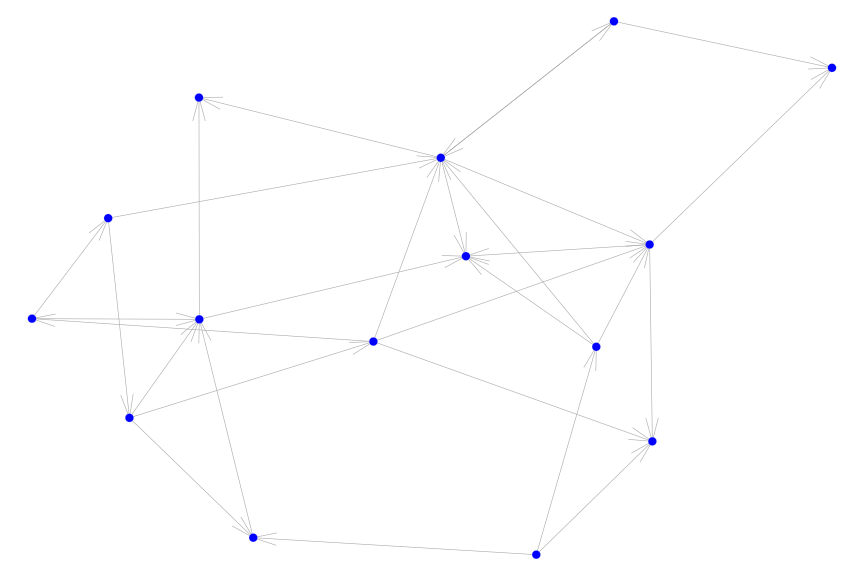

To demonstrate what this package provides, we first load the package, the igraph package, and some data.
Basic Usage & Options
The most basic usage of the igplot function is the following:
where we have set a seed to keep the layout constant across different plots. In fact, you won’t even need to specify the layout option. In this case, the layout of the graph will be created by the igraph::layout.auto() function.
When our graph is directed, we can incorporated this information by specifiying the directed = TRUE option.
set.seed(123)
g = erdos.renyi.game(15, .15, directed = TRUE)
igplot(g, directed = T)
The igplot function admits multiple options to change the appearance of the graph. For example, can use different colors for the nodes and edges using the v_fill and e_col option, respectively, and change the background of the plot with the bg option:
clust = membership(cluster_infomap(karate))
set.seed(42)
vcols = viridis::inferno(length(unique(clust)), begin = .2, end = .8)
igplot(
karate,
layout = "layout_with_fr",
bg_col = "black",
plot_opts = list(
v_fill = vcols[clust],
v_cex = .8,
e_col = "white"
)
)The function doesn’t include options for the transparency of the colors. But we can always use the scales package for these purposes:
set.seed(42)
igplot(
karate,
layout = "layout_with_fr",
bg_col = "black",
plot_opts = list(
v_fill = scales::alpha(vcols[clust], .3),
v_cex = .8,
e_col = "white"
)
)Usually, will export the plot into a .pdf file. In the igplot function, you can do this by specifying the path to the output file using the outfile option together with width and height to specify the dimensions of the plot (in inches). These options are feeded into the grDevices::pdf function.
Saving data for further use
Often, we want to have a deeper look into a subset of the data. In this case, you can specify the return_data option:
set.seed(42)
dat = igplot(
karate,
layout = "layout_with_fr",
bg_col = "black",
plot_opts = list(
v_fill = vcols[clust],
v_cex = .8,
e_col = "white"
),
return_data = TRUE,
plot = FALSE
)where the plot = FALSE option means that we don’t want to see the plot. When return_data is TRUE the function returns an object of class igplotdat, which is simply a list with two elements: a data.table for the vertices and a data.table for the edges:
# check class of the returned data
class(dat)
#> [1] "igplotdat"
class(dat$vertices)
#> [1] "data.table" "data.frame"
class(dat$edges)
#> [1] "data.table" "data.frame"To get the first couple of rows of each of these data.tables, you can just print the object:
dat
#> Vertices :
#> name dim1 dim2 v_pch v_frame v_fill v_lwd v_cex
#> 1: Mr Hi 3.257715 1.852703 21 white #420A68FF 0.1 0.8
#> 2: Actor 2 2.460663 2.024133 21 white #420A68FF 0.1 0.8
#> 3: Actor 3 1.766522 1.613863 21 white #420A68FF 0.1 0.8
#> 4: Actor 4 2.766761 1.152950 21 white #420A68FF 0.1 0.8
#> 5: Actor 5 4.652863 1.538713 21 white #BB3754FF 0.1 0.8
#> 6: Actor 6 5.235467 1.822716 21 white #BB3754FF 0.1 0.8
#>
#> Edges :
#> name1 name2 dim1_1 dim2_1 dim1_2 dim2_2 e_col e_lwd
#> 1: Actor 3 Actor 10 1.766522 1.613863 0.5416796 3.385529 white 0.3
#> 2: Actor 5 Actor 11 4.652863 1.538713 5.0719871 1.102160 white 0.3
#> 3: Actor 6 Actor 11 5.235467 1.822716 5.0719871 1.102160 white 0.3
#> 4: Mr Hi Actor 11 3.257715 1.852703 5.0719871 1.102160 white 0.3
#> 5: Mr Hi Actor 12 3.257715 1.852703 4.4205455 2.938555 white 0.3
#> 6: Actor 4 Actor 13 2.766761 1.152950 3.5614228 0.087314 white 0.3
#>
#> `iplotdat` object with layout informationThe dim{i} and dim{i}_{j} columns contain the coordinates of the vertices and edges respectively.
Subsetting graphs
The igplot package provides also a couple of useful functions. For example, if you want to plot a subset of the vertices separately, you can use the subset_plot_df function on the dat object. You need to specify the variable name you want to subset on as well as it’s value(s).
Currently, subsetting is only supported for
- a variable that is contained in the
verticesslot of aigplotdatobject. In this case, thesub_varoption should be a character string and thesub_valoption has to be provided as well. Then,subset_plot_dfwill extract all vertices for whichsub_var == sub_valevaluates toTRUE. Examples of when you want to use this function are extracting vertices of a certain color, size, etc. - a variable that is not contained in the
verticesslot of aigplotdatobject. In this case, you need to provide thesub_varoption with alogicalvector that is of the same length as the number of rows invertices. Thesub_valoption will be ignored in this case.
For example, if we want to extract the data for vertices for which clust == 2, we can use the following code:
sub_dat = subset_plot_df(dat, sub_var = (clust == 2), keep_edges = "all")Plotting the subsetted data is then straightforward:
igplot(sub_dat, bg_col = "black")Notice that all edges are are plotted, even if they are not connected to the nodes of interest (although the nodes for which clust == 2 is FALSE are not plotted). To plot only those nodes belonging to the second cluster, we can specify the corp option:
igplot(sub_dat, bg_col = "black", corp = TRUE)We can also go one step further and drop all edges that do not connect two vertices of the subgroup of interest entirely by using the keep_edges option in the subset_plot_df function:
sub_dat2 = subset_plot_df(dat, sub_var = (clust == 2), keep_edges = "within")
igplot(sub_dat2, bg_col = "black")Aligning two graphs on the same vertex set
When plotting networks over time, we often face the problem that position of nodes are arbitrarily rotated even when the underlying graph remains quite similar. In these situations, we can use a procrustes transform to realign the graphs.
To demonstrate how the function works, we first create two graphs that are only slightly different but give different plotting results (even with the same random seed).
# add two edges
karate_2 = add_edges(
karate, c("Mr Hi", "Actor 17", "Actor 13", "Actor 17")
)
set.seed(42)
dat_org = igplot(
karate,
layout = "layout_with_fr",
plot_opts = list(v_fill = vcols[clust]),
bg_col = "black",
return_data = TRUE
)
set.seed(42)
dat_new = igplot(
karate_2,
layout = "layout_with_fr",
plot_opts = list(v_fill = vcols[clust]),
bg_col = "black",
return_data = TRUE
)We see that the positions of the clusters have changed, even though we used the same random seed when calculating the layout. To bring the plots into alignment, we can apply the procrustes transform to the coordinates of dat_new with the coordinates of dat_org as the target.
# procrustes transform of layout
dat_new_procrustes = procrustes(dat_new, dat_org)
# check class
class(dat_new_procrustes)
#> [1] "igplotdat"The procrustes function returns an igplotdat object when the first argument is an igplotdat object. Otherwise, it will return a matrix with two columns that correspond to the first and second dimension of the transformed layout. Since the output is a igplotdat object, we can plot it immediately with the igplot function.
# plot transformed graph
igplot(dat_new_procrustes, bg_col = "black")As the underlying graphs are different, the transform brings the plots not into perfect alignment. Still, it rotates and scales the plot, such that the “Mr Hi” and “John A” factions are clearly on the same side as in the original plot.